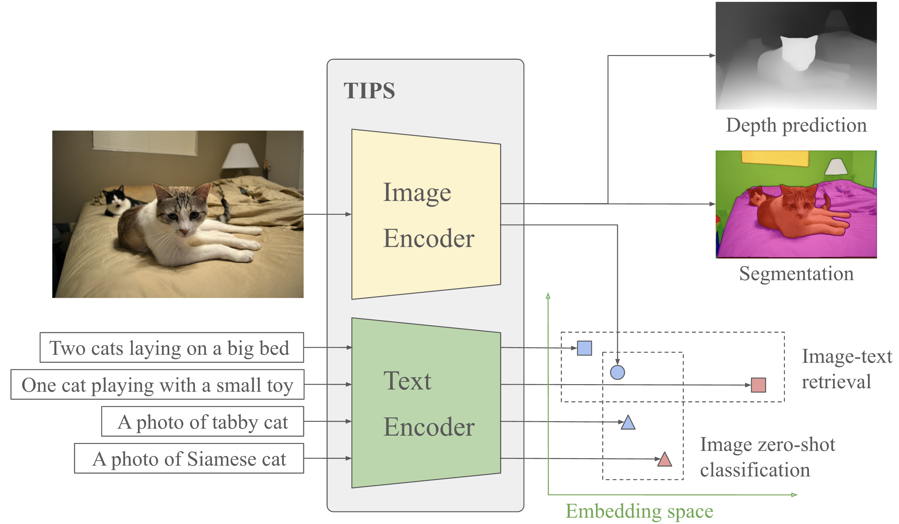
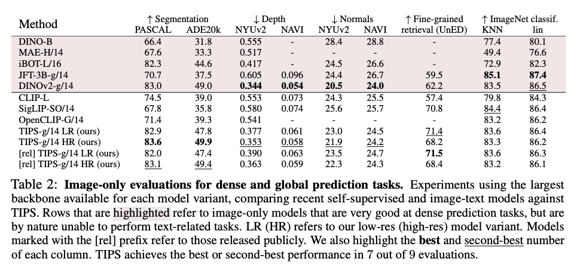

TIPS: Text-Image Pretraining with Spatial Awareness

While image-text representation learning has become very popular in recent years, existing models tend to lack spatial awareness and have limited direct applicability for dense understanding tasks. For this reason, self-supervised image-only pre-training is still the go-to method for many dense vision applications (e.g. depth estimation, semantic segmentation), despite the lack of explicit supervisory signals. In this paper, we close this gap between image-text and self-supervised learning, by proposing a novel general-purpose image-text model, which can be effectively used off the shelf for dense and global vision tasks. Our method, which we refer to as Text-Image Pretraining with Spatial awareness (TIPS), leverages two simple and effective insights. First, on textual supervision: we reveal that replacing noisy web image captions by synthetically generated textual descriptions boosts dense understanding performance significantly, due to a much richer signal for learning spatially aware representations. We propose an adapted training method that combines noisy and synthetic captions, resulting in improvements across both dense and global understanding tasks. Second, on the learning technique: we propose to combine contrastive image-text learning with self-supervised masked image modeling, to encourage spatial coherence, unlocking substantial enhancements for downstream applications. Building on these two ideas, we scale our model using the transformer architecture, trained on a curated set of public images. Our experiments are conducted on 8 tasks involving 16 datasets in total, demonstrating strong off-the-shelf performance on both dense and global understanding, for several image-only and image-text tasks.
We demonstrate strong off-the-shelf performance in both dense and global understanding, for image-only and image-text tasks.
TIPS shows strong results in dense understanding tasks, including Semantic Segmentation, Depth Estimation, and Normal Estimation. See below for quantitative results and a visualization of representative outputs for each task.

@InProceedings{tips_paper,
Title = {{TIPS: Text-Image Pretraining with Spatial Awareness}},
Author = {Maninis, Kevis-Kokitsi and Chen, Kaifeng and Ghosh, Soham and Karpur, Arjun and Chen, Koert and Xia, Ye and Cao, Bingyi and Salz, Daniel and Han, Guangxing and Dlabal, Jan and Gnanapragasam, Dan and Seyedhosseini, Mojtaba and Zhou, Howard and Araujo, André},
Booktitle = {ICLR},
year = {2025}
}